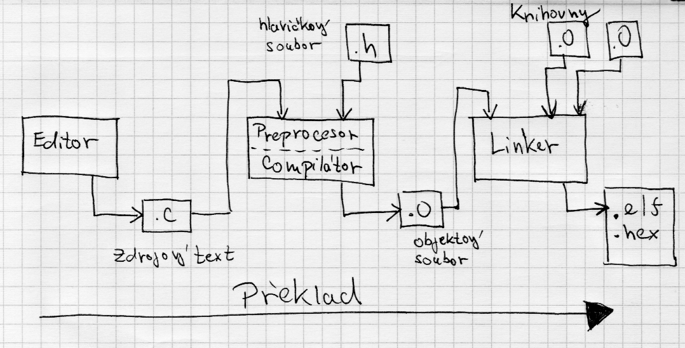

Je hodně věcí, o kterých se dá mluvit v souvislosti s jazykem C. Nechci sem psát učebnici, protože je jich napsaných spousta. Mám ale dojem, že je potřeba napsat malý přehled toho, co byste měli v souvislosti s programováním mikroprocesorů vzít jistě v potaz. Zde tedy nabízím výcuc, který by každý náš student měl během 3. ročníku zvládnout.
Nebo možná jinak: Vše, co je zde zmíněno (i to, na co se jen odkazuji) byste fakt měli znát! Bez toho se nehnete. Buď je to zde přímo vysvětleno, nebo je zde odkaz na zdroj ze kterého byste to měli pochopit, ale v každém případě byste se tím měli vážně zabývat.
- Učebnice:
- Klasika je učebnice jazyka C je ta od Pavla Herouta. Patří k ní i druhý díl, ale ten není pro embeded programování tolik důležitý.
- Další je C pro mikrokontrolery
- … a Programovací jazyk C pro zelenáče
Pokud hledáte nějaký online návod nebo referenční příručku, můžete začít třeba tu:
- https://www.sallyx.org/sally/c/
- https://www.w3schools.com/c/
- https://www.tutorialspoint.com/cprogramming/index.htm
Funkce main a ostatní funkce¶
Hlavní program se nachází v funkci main. Funkce main tedy musí být v každém
programu/projektu. V našem případě by funkce main měla obsahovat nekonečnou
smyčku hlavního programu. Procesor musí stále něco dělat, proto musí běžet v
nekonečné smyčce. Nekonečnou smyčku vytvoříme pomocí cyklu while nebo for.
void main(void)
{
setup();
while (1) {
udelej_to();
udelej_tohle();
}
}
void main(void)
{
setup();
for (;;) {
udelej_to();
udelej_tohle();
}
}
Obecně vypadá hlavička funkce takto:
datový_typ_návratové_hodnoty název_funkce(datový_typ_parametru jméno_parametru)
konkrétně pak takto:
int16_t prevod(int8_t a,b)
{
int c;
c = 10 * a + b;
return c
}
Funkce jménem prevod vrací 16-bitové číslo datového typu int16_t. Jako
parametry funkce přebírá dvě 8-bitová čísla a a b typu int8_t.
Funkci potom můžeme volat třeba takto:
int16_t cislo;
cislo = prevod(7,5);
Pokud funkce nic nevrací, nebo nemá žádné parametry použijeme klíčové slovo
void.
void delay_1ms(void)
{
_delay_us(250);
_delay_us(250);
_delay_us(250);
_delay_us(248);
}
Když funkci voláme, musíme vždy uvést závorky, i když nepřebírá žádné parametry:
delay_1ms();
Jak je to vlastně s kompilací?¶
Mějme tento zdrojový text:
#include "stm8s.h"
#include "milis.h"
#define LED_PORT GPIOC
#define LED_PIN GPIO_PIN_5
#define LED_HIGH GPIO_WriteHigh(LED_PORT, LED_PIN)
#define LED_LOW GPIO_WriteLow(LED_PORT, LED_PIN)
#define LED_REVERSE GPIO_WriteReverse(LED_PORT, LED_PIN)
void setup(void)
{
CLK_HSIPrescalerConfig(CLK_PRESCALER_HSIDIV1); // taktovani MCU na 16MHz
GPIO_Init(LED_PORT, LED_PIN, GPIO_MODE_OUT_PP_LOW_SLOW);
GPIO_Init(BTN_PORT, BTN_PIN, GPIO_MODE_IN_FL_NO_IT);
init_milis();
}
int main(void)
{
uint32_t time = 0;
setup();
while (1) {
if (milis() - time > 333) {
LED_REVERSE;
time = milis();
}
}
}
U jazyka C se převod zdrojového textu do strojové hexadecimální podoby děje v několika fázích.
Nejprve se zdrojový text předzpracuje pomocí preprocesoru – ten vloží do
zdrojového textu hlavičkové soubory a expanduje všechna makra.
Všechny direktivy, kterým rozumí preprocesor začínají znakem #.

Následuje zpravování kompilátorem. Ten převede zdrojový text do podoby
relativního objektového kódu příslušného mikroprocesoru. To je již téměř
hotový program ve strojovém kódu, ale adresy použitých proměnný a funkcí
ještě nejsou známé a jsou tedy jen relativní. Výsledkem je objektový soubor s
příponou .o nebo .obj.
V našem příkladu je volána funkce GPIO_Init, jejíž tělo (definice) je ale
uvedena v jiném souboru, který se překládá samostatně. Kompilátor tedy v
tuto chvíli nezná konkrétní adresu, na které se funkce nachází – proto/protože
neví na jaké konkrétní adrese v paměti mikropočítače bude funkce uložena.
V poslední fázi se relativní adresy proměnných a funkcí nahradí skutečnými
adresami na kterých budou tyto proměnné a funkce uloženy v paměti
mikropočítače. Tato fáze se označuje jako linkování (linking time) a
provádí je linker. Jsou k tomu potřeba všechny objektové soubory celého
projektu: tedy zdrojový text s funkcí main a všechny knihovny, které také
museli projít procesem kompilace. Teď už bude možné zavolat funkci GPIO_Init,
protože linker do strojového kódu vloží její skutečnou adresu.
Více je toto téma rozvedeno v postu Oddělená kompilace a vlastní knihovny.
Základní datový typy¶
Při embeded programování potřebuje v naprosté většině případů pracovat s celými
čísly nebo s reálnými čísly pomocí pevné řádové
čárky. Je tedy třeba si
vystačit s celočíselnými datovými typy. C sice nabízí datový typ float, ten
pro nás ale z důvodů omezené paměti není většinou vhodný.
Klasické C nabízí
datové typy
char, short int, int, long int, long long int.
Specifikace ale neuvádí konkrétní počet bitů, který se pro daný datový typ má
použít – toto závisí na konkrétním kompilátoru a každý kompilátor to má jinak.
Jediná zaručená věc je toto:
sizeof(char) <= sizeof(short int) <= sizeof(int) <= sizeof(long int) <= sizeof(long long int) <=
Operátor sizeof
vrací počet bytů, použitých v paměti pro danou proměnnou.
Například kompilátor SDCC to má takto:
| type | počet bit | počet byte |
|---|---|---|
| char | 8 bits | 1 byte |
| short | 16 bits | 2 bytes |
| int | 16 bits | 2 bytes |
| long | 32 bit | 4 bytes |
| long long | 64 bit | 8 bytes |
Protože každý kompilátor je trošku jiný nikdy si nemůžete být jistí, kolik
paměti kompilátor proměnné přiřadil používají se v embeded programování
datové typy které to zaručují a kde je vše jasné hned na první pohled.
My je máme definovány v knihovně SPL a jsou dostupné jakmile zavoláme
#include stm8s.h.
Je pravidlem, že vlastní/uživatelské datové typy užívají postfix _t.
Písmeno u na začátku znamená unsigned – tedy bez znaménka. Do takové
proměnné můžeme tedy ukládat pouze kladná čísla.
| type | znaménko | počet bit | číselný rozsah |
|---|---|---|---|
| int8_t | kladná i záporná | 8 | -128 až 127 |
| uint8_t | nezáporná | 8 | 0 až 255 |
| int16_t | kladná i záporná | 16 | -32.768 až 32.767 |
| uint16_t | nezáporná | 16 | 0 až 65535 |
| int32_t | kladná i záporná | 32 | -2.147.483.648 až 2.147.483.647 |
| uint32_t | nezáporná | 32 | 0 až 4.294.967.295 |
Je myslím také dobré zmínit, že int8_t je ekvivalent k char a uint8_t je
ekvivalent k unsigned char. Rozdíl je ale v čitelnosti programu. Pokud
proměnnou deklaruji jako char bude její hodnota zřejmě představovat nějaký
znak, jehož číselná hodnota je v ní uložena.
Řízení běhu programu¶
- Podmínky a cykly
- Pro
větvení se
používá výraz:
if,if .. else,switch. - Cykly máme k
dispozici ve třech podobách:
while,do while,for.
Čísla a operace¶
Čísla a
konstanty je
možné zapisovat v desítkové, osmičkové (prefix 0), šestnáctkové (prefix 0x)
nebo dvojkové (prefix 0b)soustavě. Přičemž písmenko na konci čísla (U, L)
udává datový typ.
85 /* decimal */
0213 /* octal */
0x4b /* hexadecimal */
0b100101 /* binar */
30 /* int */
30U /* unsigned int */
30L /* long */
30UL /* unsigned long */
55123123123ULL /* unsigned long long */
Znaková konstanta je číselná hodnota zadaná pomocí znaku. Konkrétní číselná hodnota konkrétního znaku je dána Ascii tabulkou. Zapisuje se do apostrofů.
Oba tyto zápisy jsou ekvivalentní:
char znak;
znak = '@';
znak = 64;
Operátory zde nebudu zevrubně popisovat ale jen zdůrazním následující:
Zaokrouhlování:
Operátor / je dělení a jeho výsledek závisí na tom, s jakým datovým typem je
proveden. My používáme většinou celá čísla. Je to tedy celočíselné dělení.
Nedochází zde k zaokrouhlování, ale useknutí desetinné části, takže výraz
40 / 21 bude 1.
Operátor % je zbytek po celočíselném dělení takže 40 % 21 je 19.
Dále je třeba si dát pozor a neplést si bitové a logické operátory.
Logické operátory && AND, || OR a ! NOT pracují s pravdivostní hodnotou.
Například:
if (a>12 && a<24) {
printf("%d je cislo mezi 13 a 23", a);
}
Bitové operátory & AND, | OR, ^ EXOR a ~ NOT, <<, >> provádí bitové
s čísly.
Například:
// 1010
// 0111
//------ & --
10 & 7 == 2 // 0010
nebo
// 00000011
//----------- << --
3<<2 == 12 // 00001100
Pravda a nepravda¶
Pravdivostní hodnota je reprezentována čísly 0 a 1. To ale není vše.
Každé číslo může být použito jako pravdivostní hodnota. Jako Nepravda –
false se interpretuje pouze číslo 0. Všechna další čísla od nuly různá se
interpretují jako Pravda – true. Tohoto se často využívá. Typické je to
například, když překládáme masku přes číslo, abychom zjistili stav
jednotlivých bitů.
// tisk binární podoby čísla
cislo = 0x5A;
maska = 1 << 7;
printf("0b");
while (maska) {
if (cislo & maska) {
printf("1");
} else {
printf("0");
}
maska = maska >> 1;
}
printf("\n");
Maska zde nabývá hodnot
0b10000000,
0b01000000,
0b00100000,
0b00010000,
0b00001000,
0b00000100,
0b00000010 a
0b00000001. Ve chvíli kdy nabude hodnotu 0b00000000 z cyklu se vyskočí.
Podobných hodnot nabývá výraz cislo & maska v podmínce if.
Návratová hodnota¶
V Céčku má každý výraz vždy sou návratovou hodnotu a tuto návratovou hodnotu lze uložit do proměnné.
Například i++ nebo ++i přičítá k proměnné jedna. Rozdíl je ale právě v
návratové hodnotě. Pokud použijete i++, nejprve se je vrácena hodnota i a
potom teprve se přičte jedna. Pokud použijete ++i, nejprve se přičte jedna a
potom teprve se vrátí hodnota již inkrementovaného i. Analogicky platí totéž pro
i-- a --i;
i = 3;
j = i++; // v j bude 3, v i bude 4
i = 3;
j = ++i; // v j bude 4, v i bude 4
Podobně lze návratovou hodnotu použít jako pravdivostní výraz v podmínkách a cyklech. Například takto:
i = 0;
while (i++ > 5) {
printf("%d\n", i);
}
Ukazatele, pole, řetězce¶
Ukazatel – pointer¶
Ukazatel je proměnná, která neobsahuje data, ale adresu na které se nachází
data. Prostě a jednoduše ukazatel je proměnná obsahující adresu proměnné.
Proměnná typu ‘ukazatel na int‘ obsahuje adresu, na které se v paměti nachází
číslo typu int. Ukazatel se deklaruje a vyhodnocuje pomocí operátoru *.
Adresa paměti se získá pomocí operátoru &.
int cislo;
int *ukazatel_cislo;
int *ukazatel_dalsi;
cislo = 77; // do proměnné cislo uložím 77
ukazatel_cislo = &cislo; // ukazatel_cislo má v sobě uloženou adresu proměnné cislo
*ukazatel_cislo = 123; // v proměnné cislo je 123
// (protože ukazatel_cislo ma v sobě adresu promenne cislo)
ukazatel_dalsi = ukazatel_cislo;
printf("%d\n", cislo); // vytiskne 123
printf("%d\n", *ukazatel_dalsi); // vytiskne 123
Ukazatelů se dá použít, když mám například 32-bitovou proměnnou a potřebuji z ní dostat odděleně čtyři 8-bitové (1B) proměnné. Mohlo by to vypadat například takto.
Pole – array¶
Pole představuje kolekci několika hodnot stejného datového typu umístěného v paměti vedle sebe jednu položku po druhé. Ke každé položce této kolekce lze přistupovat zvlášť pomocí indexu.
int cislo[10];
int *pole;
int i = 0;
while (i < 10) {
cislo[i++] = i * i;
}
pole = cislo;
for (i = 0; i < 10; i++) {
printf("%d\n", pole[i]);
}
printf("Indexace pomocí []: %d\n", pole[7]);
printf("Indexace ukazatele: %d\n", *(pole + 7));
Pole a ukazatel jsou v Céčku velmi úzce svázané. Proměnná cislo je typově
kompatibilní s ukazatelem na int int *. V proměnné cislo je uložena adresa,
na které začíná kolekce deseti po sobě jdoucích hodnot.
Ještě je potřeba říct, že Céčko nijak nehlídá jestli náhodou index nepřesáhl
stanovenou mez. Takže výraz cislo[22] = 51; se normálně provede, ale přepíše
se část pamětí ve které se v danou chvíli nachází třeba jiná proměnná. To může
vést k naprosto neočekávanému pseudonáhodnému chování.
Řetězec – string¶
Řetězec je “jen” pole znaků. Dá se s ním tedy pracovat stejně jako s polem.
char retezec[22] = "Cecko je nejlepsi.";
for (int i=0; i<20; i++) {
printf("%c, %d\n", retezec[i], retezec[i]);
}
printf("KONEC");
Každý správný řetězec v Céčku končí znakem \0 s ascii hodnou 0 (nula). Podle
tohoto se dá spolehlivě rozpoznat, že řetězec už na konci – přestože paměť je
alokovaná pro více znaků než řetězec obsahuje.
Makra¶
Makra preprocesoru představují velmi mocný nástroj jak si zpřehlednit zdrojový kód. Při programování mikrokontrolérů představuje definice správných maker více-méně nutnost, bez které se v kódu velmi rychle ztratíte. Poměrně dobře jsou možnosti preprocesoru popsány na www.sallyx.org.
V nejjednodušším případě je makro nějaká zkratka nebo konstanta. Všude, kde se ve zdrojovém kódu vyskytne toto makro, je nahrazeno jeho obsahem. Případná změna tedy proběhne jen jednom místě – při definici. Makra se provádí (expandují) ještě před zahájením kompilace. To je velký a zásadní rozdíl oproti proměnným, které se nachází v paměti.
#include <stdio.h>
#define MAX 12
int data[MAX];
int main(void) {
for (int i=0; i < MAX; i++) {
data[i] = i * i;
}
for (int i=0; i < MAX; i++) {
printf("%d ", data[i]);
}
putchar('\n');
return 0;
}
V našem případě budeme marka používat pro pojmenování jednotlivých pinů. To je velmi užitečné, protože budeme moci s minimálním zásahem do kódu přemístit jednotlivé periferie nebo portovat projekt na jiný mikrokontroler.
#define LED_PORT GPIOC
#define LED_PIN GPIO_PIN_5
#define NCODER_CLK_PORT GPIOB
#define NCODER_CLK_PIN GPIO_PIN_5
#define NCODER_DATA_PORT GPIOB
#define NCODER_DATA_PIN GPIO_PIN_4
void setup(void)
{
GPIO_Init(LED_PORT, LED_PIN, GPIO_MODE_OUT_PP_LOW_SLOW);
GPIO_Init(NCODER_CLK_PORT, NCODER_CLK_PIN, GPIO_MODE_IN_FL_NO_IT);
GPIO_Init(NCODER_DATA_PORT, NCODER_DATA_PIN, GPIO_MODE_IN_FL_NO_IT);
}
Já osobně si ještě dělám vždy sadu maker s parametrem, která mi umožňuje
efektivně číst a zapisovat stav jednotlivých pinů (operátor ## provádí sřetězení):
#define LOW(BAGR) GPIO_WriteLow(BAGR##_PORT, BAGR##_PIN)
#define HIGH(BAGR) GPIO_WriteHigh(BAGR##_PORT, BAGR##_PIN)
#define REVERSE(BAGR) GPIO_WriteReverse(BAGR##_PORT, BAGR##_PIN)
#define READ(BAGR) GPIO_ReadInputPin(BAGR##_PORT, BAGR##_PIN)
#define PUSH(BAGR) (GPIO_ReadInputPin(BAGR##_PORT, BAGR##_PIN)==RESET)
Místo poměrně těžkopádného:
GPIO_WriteHigh(CLK_PORT, CLK_PIN);
… můžu napsat
HIGH(CLK);
Kód se tak lépe zapisuje, čte i portuje na jinou platformu.
Další datové typy¶
Jak více-Bytovou proměnnou rozřezat na jednotlivé Byte.¶
Pří práci s µkontrolerem a různými periferiemi lze poměrně často narazit na úlohy typu: Mám data v 32-bitové (4-Bytové) proměnné, ale abych je mohl zobrazit potřebuji každý Byte zvláště. Potřebuji tedy 32-bitovou proměnnou rozdělit na čtyři 8-bitové proměnné. Dá se to udělat celkem asi třemi různými způsoby. Mě osobně přijde nejhezčí a nejpřehlednější ten druhý.
1. Masky¶
unsigned int num = 0x12345678;
unsigned char byte[4];
byte[0] = (num & 0xFF000000L) >> 24;
byte[1] = (num & 0x00FF0000L) >> 16;
byte[2] = (num & 0x0000FF00L) >> 8;
byte[3] = (num & 0x000000FFL);
printf("Bytes: %02x %02x %02x %02x\n", byte[0], byte[1], byte[2], byte[3]);
2. Uniony¶
union Number {
unsigned int whole;
unsigned char bytes[4];
};
int main() {
union Number num;
num.whole = 0x12345678;
printf("Bytes: %02x %02x %02x %02x\n", num.bytes[0], num.bytes[1],
num.bytes[2], num.bytes[3]);
return 0;
}
3. Ukazatele¶
unsigned int cislo = 0x12345678;
unsigned char *ukazatel;
// ukazatel na int přetypujeme na ukazatel na char
// tím se jedna velká buňka rozdělí na 4 malé buňky
ukazatel = (unsigned char *)&cislo;
printf("Bytes: %02X %02X %02X %02X\n", *ukazatel, *(ukazatel + 1),
*(ukazatel + 2), *(ukazatel + 3));
Moduly a externí proměnné¶
Toto téma naleznete v samostatném postu Oddělená kompilace a vlastní knihovny.